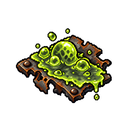
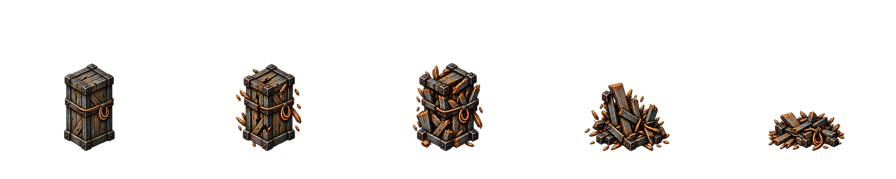
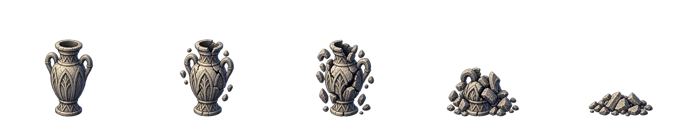

DRAFT · 28/10/2026 · Três fontes geradas; cinco derivados preparados. Aceite visual pendente. Nenhuma integração no jogo.

128×128, alfa real.
Fonte original
Prévia em ciclo · 5 quadros.
Sprite intacto · Fonte original

Prévia em ciclo · 5 quadros.
Sprite intacto · Fonte original

O Discípulo permanece opcional e adiado. As prévias servem para revisar as candidatas; não representam captura de gameplay.